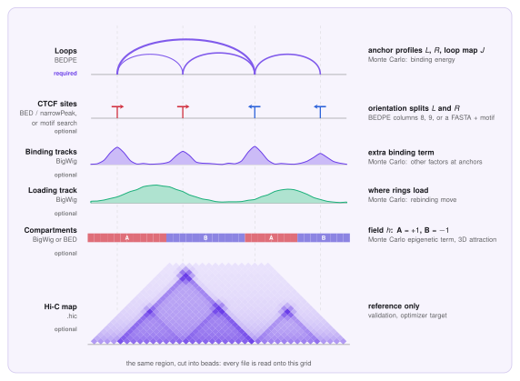

Data input¶
This page lists the files LoopSage reads, what each one must look like, and which ones you need. In short: one file with loops or peaks, and a region, are enough. Everything else is optional and each optional file adds a feature.
All text files are plain tab-separated (spaces also work for BEDPE) with no header line. Lines starting with # are ignored. Coordinates are 0-based, half-open (the BED convention), in base pairs. Chromosome names chr1 and 1 are treated as the same.
What you need¶
| Input | Required? | Format | Config key / CLI flag | What it gives |
|---|---|---|---|---|
| Loops or peaks | Mandatory | .bedpe, .bed or .narrowPeak |
interaction_file / -f |
Anchor sites and loop weights: the main input of the model |
| Region | Mandatory | chr:start-end |
chrom, region_start, region_end / -r |
The stretch of genome to simulate. Only chrom is strictly needed: without start and end the whole chromosome is used (with a warning) |
| Genome assembly | Optional | hg38 or hg19 |
genome |
Chromosome lengths. Default hg38 |
| Hi-C map | Optional | .hic |
hic_file / --hic |
Reference for validation, and the target of the optimizer |
| BigWig binding tracks | Optional | .bw |
bw_files, bw_strengths |
Extra binding energy from other factors |
| Loading track | Optional | .bw |
lef_track_file / --lef-track |
Where extruders prefer to load |
| Compartments | Optional | .bw or .bed |
comp_bw_file or comp_bed_file |
A/B attraction in the 3D stage |
| Reference genome | Optional | FASTA (.fa, not compressed) |
motif_genome / --motif-genome |
CTCF motif search to set anchor orientations (BEDPE only) |
| Motif matrix | Optional | PFM text | motif_pfm / --motif-pfm |
Replaces the bundled CTCF motif |
| Force field | Optional | OpenMM XML | forcefield_path |
Replaces the bundled force field |
| Config file | Optional | .ini |
-c |
All settings in one file, see Config files |
Minimal run
loopsage -f loops.bedpe -r chr1:77000000-95000000
Which data is used for what¶
LoopSage works in two steps, and the files feed different ones. In the Monte Carlo step the model decides which sets of loops are likely. In the molecular dynamics step it folds the polymer into 3D structures. The figure shows each file on one toy region; every file is first read onto the same grid of beads.

| Data | Which part of the model | In plain words |
|---|---|---|
| Loops (BEDPE) | Monte Carlo, binding energy | Says where loops can end and how strongly. Extruder legs are rewarded for sitting on anchors with many supporting reads |
| CTCF sites (BED, narrowPeak, motif search) | Monte Carlo, binding energy | Same idea when you have no loops, only binding sites. The orientation (forward or reverse) tells which leg of a ring may stop at the site |
| Binding tracks (BigWig) | Monte Carlo, extra binding term | Other proteins that stop or anchor extruders. Each track has its own strength |
| Loading track (BigWig) | Monte Carlo, rebinding move | Says where new rings are loaded. Without it, loading is uniform along the region |
| Compartments (BigWig or BED) | Monte Carlo epigenetic term and 3D attraction | Marks beads as A (active) or B (inactive). Like-type beads attract in the 3D step, so compartments separate. If you give none, they can be taken from the Hi-C map when the epigenetic model is on |
Hi-C map (.hic) |
Validation and optimizer | A reference, not an input of the simulation. It is compared with the predicted map, and --optimize tunes the energy coefficients to match it |
| Reference genome and motif | Preprocessing | Finds CTCF motifs in the anchors, so the orientation is known without columns 8 and 9 |
| Force field (XML) | Molecular dynamics | Defines the polymer (bonds, stiffness, excluded volume) |
Loops versus peaks
A loop file tells the model which pairs of sites interact. A peak file only tells which sites exist, so the model predicts the loops itself. Give loops whenever you have them.
Loops and peaks (mandatory)¶
LoopSage chooses the reader from the file extension (.bedpe, .bed, .narrowPeak, case-insensitive). Any other extension is an error. Only features that lie inside the region are used.
BEDPE: loops¶
One loop per line, with both anchors. This is the usual output of loop callers and of ChIA-PET / HiChIP pipelines.
| Column | Content | Needed? |
|---|---|---|
| 1-3 | chromosome, start, end of the first anchor | yes |
| 4-6 | chromosome, start, end of the second anchor | yes |
| 7 | weight (PET count or score) | optional |
| 8 | probability that the first anchor is a reverse CTCF site | optional |
| 9 | the same for the second anchor | optional |
chr14 23050000 23055000 chr14 23120000 23125000 18 0.08 0.92
chr14 23180000 23185000 chr14 23260000 23265000 42 0.15 0.88
- Both anchors must lie inside the region. Loops with an anchor outside are dropped, as are identical duplicates and lines whose coordinates are not numbers.
- Weight (column 7): stronger loops weigh more. Without it all loops count equally.
min_pet/--min-petkeeps only loops with at least that weight. - Orientation (columns 8, 9): a value in \([0,1]\) is the probability that the anchor is a reverse site, or
-1for unknown. Without these columns, or for-1, an anchor counts as equally likely forward or reverse. You can have LoopSage fill them in from the genome sequence withmotif_genome(see below).
BED: peaks¶
One binding site per line (for example CTCF ChIP-seq peaks). Loops are not given, so the sites define where loops may end.
| Column | Content | Needed? |
|---|---|---|
| 1-3 | chromosome, start, end | yes |
| 5 | score, used as the binding weight | optional |
| 7 | probability that the site is a reverse site (-1 = unknown) |
optional |
chr14 23051200 23052800 site_1 1842 . 0.10
narrowPeak: ENCODE peaks¶
The standard 10-column ENCODE peak format.
| Column | Content | Needed? |
|---|---|---|
| 1-3 | chromosome, start, end | yes |
| 5, 7 | score; signalValue (column 7) is preferred as the weight |
optional |
| 10 | summit offset from the start; places the site on the bead of the summit | optional |
| 11 | optional extra column: probability that the site is a forward site (stored as reverse = 1 − value) | optional |
chr14 23051200 23052800 peak_1 1842 . 18.23 187.42 184.20 780
Which one should I use?
Use BEDPE if you have loops, because the model then also learns which anchors are paired. Use BED or narrowPeak if you only have binding sites; the model then predicts the loops that these sites can make. min_pet and motif_genome work for BEDPE only.
Hi-C map (optional)¶
A .hic file (Juicer format), read with the hic-straw package (installed with LoopSage). It is used as a reference to compare the predicted map to, and as the target for --optimize. It is never needed to run the model.
- LoopSage picks the file resolution closest to the bead size (
hic_resolution = 0); set a bin size in bp to choose it yourself. hic_normisKRby default. If that normalisation is missing it falls back toSCALE,VC_SQRT,VCand finallyNONE.- The map is rebinned onto the beads. Beads without data are masked, not treated as zero.
- A file that cannot be opened, or has no usable data for the region, stops the run with a clear message.
BigWig tracks (optional)¶
Signal files (.bw, .bigWig) read with pyBigWig. The chromosome must exist in the file. Values are averaged per bead; negative values are set to zero. With smoothing_input on (default), they are smoothed slightly.
| Use | Key | Meaning |
|---|---|---|
| Binding tracks | bw_files, bw_strengths |
One or more tracks (comma-separated) that add binding energy, for example other architectural proteins. bw_strengths gives one strength per track; if omitted, each track gets a default strength. A different number of strengths and tracks is an error |
| Loading track | lef_track_file |
Where extruders are loaded, for example a cohesin loader ChIP-seq. Without it, loading is uniform |
| Compartments | comp_bw_file |
An A/B signal, scaled to \([-1,1]\) (positive = A, negative = B) |
Compartments as BED (optional)¶
An alternative to the BigWig: comp_bed_file. Give only one of comp_bw_file and comp_bed_file.
| Column | Content | Needed? |
|---|---|---|
| 1-3 | chromosome, start, end | yes |
| 4 | label starting with A or B; sub-compartments such as A.1.2 are accepted |
yes |
| 5 | score in \([0,1]\), mapped to \(2\cdot\text{score}-1\) | optional |
chr1 77000000 77900000 A 0.70 .
chr1 77900000 79750000 B 0.08 .
If no row overlaps the region, the run stops with an error.
Reference genome and motif (optional)¶
With motif_genome set (BEDPE input only), LoopSage scans every anchor for CTCF motifs on both strands and writes the orientation probabilities for you, instead of reading columns 8 and 9.
- FASTA: an uncompressed reference genome (
.fa,.fasta). A.faiindex is built next to the file on the first use (if the folder is writable) and reused later. Compressed.gzfiles are not supported: decompress them first. Chromosome names are matched with or withoutchr. Anchors on a chromosome missing from the FASTA get no orientation. - PFM (
motif_pfm): by default the bundled JASPAR CTCF matrix (MA0139.1) is used. To use another motif, give a text file with four rows (A, C, G, T) of equal length. Plain numbers or the JASPAR styleA [ 4 19 ... ]are both accepted, and>header lines are skipped. - Tuning:
motif_pvalue(hit cutoff, default \(10^{-5}\), smaller is stricter),motif_pseudocount(default 0.8) andmotif_pad(extend each anchor by this many bp).
Force field (optional)¶
forcefield_path points to an OpenMM force-field XML. The bundled one is used by default, and you only need your own to change the polymer model itself.
What happens when something is wrong¶
| Situation | Result |
|---|---|
No interaction_file, or the file does not exist |
Error, run stops |
Extension is not .bedpe, .bed or .narrowPeak |
Error |
| No chromosome given, or an unknown chromosome | Error |
| Region start/end missing | Whole chromosome used, with a warning |
Both comp_bw_file and comp_bed_file |
Error |
bw_strengths count differs from bw_files count |
Error |
min_pet or motif_genome with BED / narrowPeak |
Error |
motif_genome or motif_pfm file missing |
Error |
| Orientation columns that are not probabilities | Warning, columns ignored |
min_pet set but BEDPE has no weight column |
Warning, filter skipped |
.hic cannot be read |
Error with the reason |
The same inputs in Python¶
In the Python interface the inputs are passed to read_inputs, either as file paths or as arrays (useful for synthetic data).
import loopsage as ls
cfg = ls.config(region="chr1:77000000-95000000", n_beads=120)
geom = ls.geometry(cfg)
# from files
inputs = ls.read_inputs(cfg, geom, loops="loops.bedpe",
compartments="comps.bed", tracks=["ctcf.bw"], lef_track="nipbl.bw")
# from arrays (positions in bp)
inputs = ls.read_inputs(cfg, geom, loops=(left, right, weight))
inputs = ls.read_inputs(cfg, geom, sites=dict(position=pos, weight=w, reverse=p))
Give loops or sites, not both. See the config page for every key and the Preprocessing page for how the inputs become bead profiles.